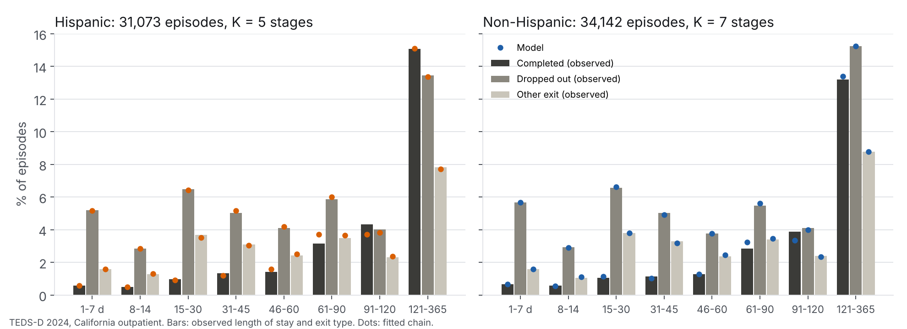
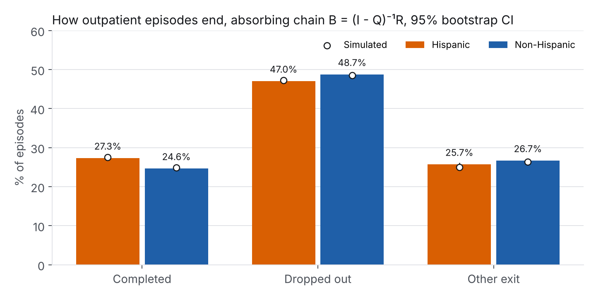
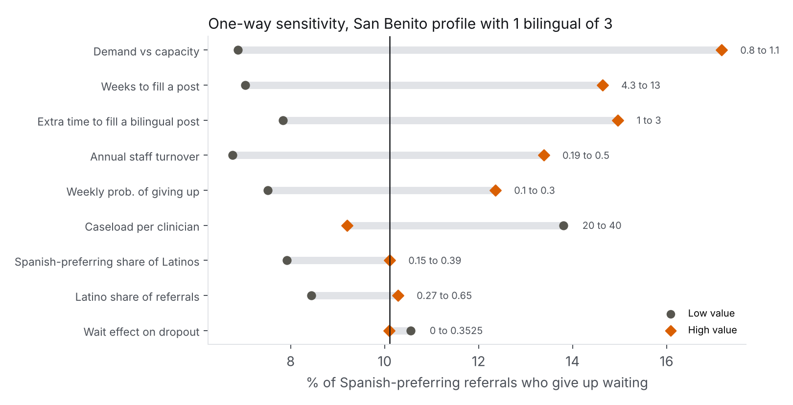
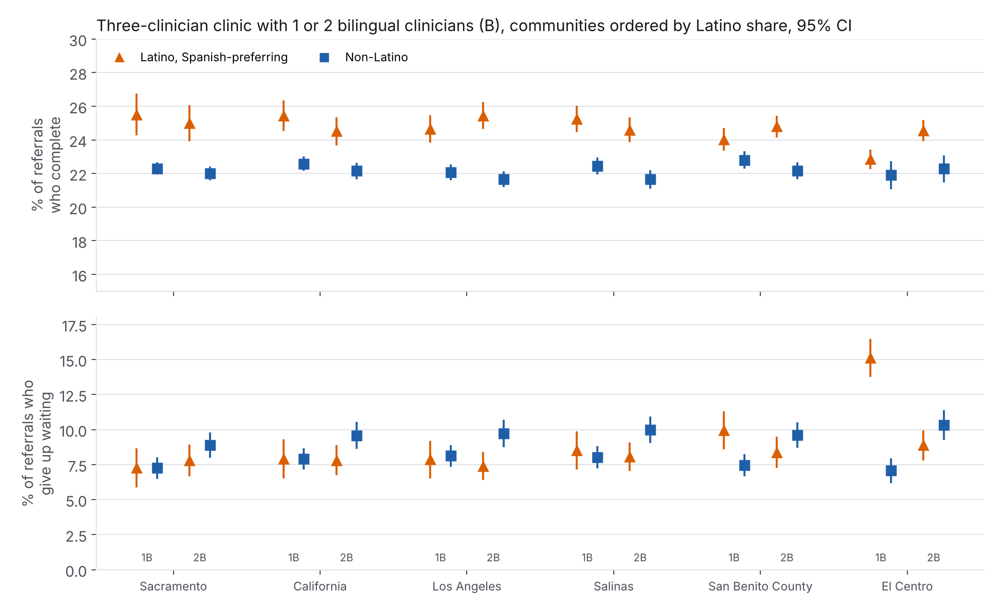
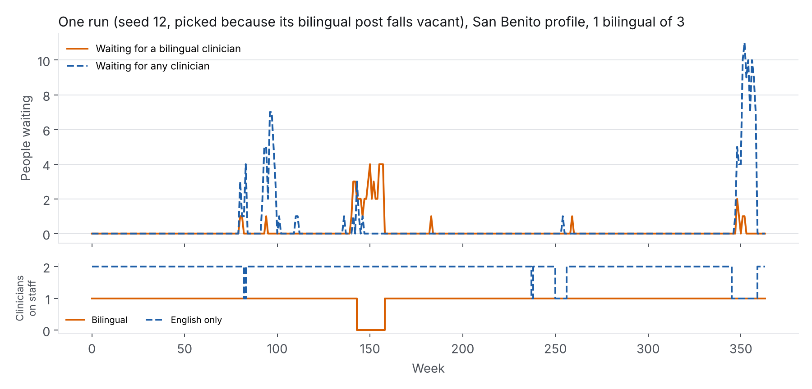

Share of each group's finished referrals who completed.
Gave up waiting
Share of each group's finished referrals who left a line.
a clinic, one week at a time
The bilingual bottleneck
Each blob is a person referred to a small outpatient clinic in California for substance use treatment. Orange blobs prefer Spanish and need a clinician who speaks it. Blue blobs are Latino and comfortable in English, and slate blobs aren't Latino.
one
Three clinicians, 90 slots
The clinic has three clinicians, each with room for 30 patients. A new referral that finds a free slot goes straight in. Every week in treatment, a patient stays, moves to a later phase, or leaves through one of the four exits on the right.
The exits show who left in the last ten weeks. A crowded exit means a lot of people are leaving that way right now.
two
Two lines
Orange blobs can only see a bilingual clinician. When those 30 slots are full, they wait in the top line, even if an English-only room has space. Everyone else waits in the bottom line and can use a bilingual slot that no orange blob needs.
About one in five people still in line gives up each week. They end up in the bottom exit.
three
Location changes the clinic
Each area has its own Latino share, its own treatment patterns from TEDS-D 2024, and its own referral volume, set so that simulated patients wait about as often as real patients did there.
four
When the bilingual clinician quits
About a third of substance use counselors leave their job within a year. If the only Spanish-speaking clinician leaves, orange blobs have nowhere to go until a new hire starts, and bilingual posts take longer to fill.
five
Results
Once in treatment, Latino and non-Latino patients in California finish at similar rates (adjusted odds ratio 0.96), and close to 48% of both groups drop out.
The difference shows up before treatment: 26% of Latino patients waited at least a day to start, against 19% of non-Latino patients. With one bilingual clinician, a single resignation can double the share of Spanish-preferring referrals who give up, as in El Centro.
Settings start at values taken from TEDS-D or from published studies, and any of them can go past realistic values. Changing staffing or caseload restarts the run, and other changes apply from the next week.
Numbers behind the board
Group
Referred
Now in
Done
Dropped
Other
Gave up
Wait (wk)
No referrals yet.
Methods
The model has three parts. Referrals arrive as a Poisson process, patients wait in a queue where they can give up, and treatment is an absorbing Markov chain estimated from California outpatient episodes in SAMHSA's TEDS-D 2024.
Reading the board
Every blob is one person referred to the clinic. Each box on the board is a place that person can be in a given week.
Orange blobs
Latino patients who speak English less than very well. They need a clinician who speaks Spanish.
Blue blobs
Latino patients who are comfortable in English.
Slate blobs
Patients who aren't Latino.
Waiting for a bilingual clinician
Orange blobs referred but not yet admitted. Only a slot with a bilingual clinician can take them, so this line moves only when one of those slots opens.
Waiting for any clinician
Blue and slate blobs not yet admitted. They take any open slot with an English-only clinician. If lending idle bilingual slots is on, they can also take a bilingual slot when no orange blob is waiting.
Clinician rooms
Each dot is one caseload slot, and a blob in a slot is in treatment. A dashed circle and "hiring" mean the post is empty, with the weeks left until someone is hired. Patients already in that room keep going, but nobody new starts there.
Phases
While in a room, each blob moves through hidden phases of the treatment chain (section 3). Phases don't show on the board and aren't clinical stages. They only shape how long people stay before they leave.
Completed
The clinic recorded that the patient finished the planned treatment. In California this is 27% of Hispanic and 25% of non-Hispanic outpatient discharges.
Dropped out
The patient stopped coming before finishing, without the clinic agreeing to the discharge. This is the most common way to leave, about 47% of Hispanic and 49% of non-Hispanic discharges.
Other exit
Every other discharge reason in TEDS-D. In California almost all of these are transfers to another program or level of care (about 24% of discharges). Jail and deaths add about 1.5%.
Gave up waiting
The person left the line before being admitted. TEDS-D only records people who were admitted, so this exit comes from the waiting model (section 2), not from the discharge records.
Bars beside the exits
The share of everyone who has left so far that went through each exit, split by color. The four bars add to 100%. The exit boxes only keep blobs from the last 10 weeks, but the bars count every exit since the run started. Hovering over or tapping a colored piece shows how much of that exit, and of all exits, that group makes up.
1. Arrivals
Referrals follow a Poisson process: they arrive one at a time, the counts in separate weeks are independent, and the expected number per week doesn't change over time. The number of referrals of each type in a week is then a Poisson count, and the time between two referrals is exponential.
The three types are Spanish-preferring Latino, English-proficient Latino and non-Latino. \(\ell\) is the Latino share and \(s\) the share of Latinos who speak English less than very well (27% in California, ACS 2021).
Little's law, \(L = \lambda W\), gives the total rate: the number of patients in the clinic equals the arrival rate times the average time each one stays. With 90 slots that are a fraction \(\rho\) full on average and an average stay of \(E[T]\) weeks,
\(E[T_i]\) comes from the treatment chain in section 3, and section 7 sets \(\rho\) for each area.
2. Waiting lines
Each caseload slot works as a server, so the clinic has \(cK\) servers split into two groups: \(c_b\) bilingual and \(c_e\) English-only clinicians with \(K = 30\) slots each. Spanish-preferring patients can only use bilingual slots. Everyone else uses English-only slots first and bilingual slots when no Spanish-preferring patient is waiting. Both lines are first in, first out.
People in line can give up. Each week, a person still waiting leaves with probability \(\theta = 0.21\), which makes patience geometric with mean \(1/\theta \approx 4.8\) weeks, close to the one month reported by Kaplan and Johri. The geometric distribution is the discrete version of the exponential and is also memoryless: someone who has waited three weeks is as likely to leave this week as someone who just arrived.
The traffic intensity is \(\rho = \lambda / (cK\mu)\), where \(\mu = 1/E[T]\) is the service rate of one slot. In Kendall notation the clinic is close to an M/G/c queue with abandonment: arrivals are Markovian (M), but treatment length isn't exponential, so service is general (G). The M/M/c formulas still give a useful reference point. For the statewide settings:
One shared pool of 90 slots would make a small share of patients wait, and only briefly. The bilingual room on its own has plenty of spare capacity for Spanish-preferring patients, until the bilingual post is vacant: then there's no server at all, and the line keeps growing until people give up. The simulation adds what these formulas leave out: two pools that share slots, people giving up, and clinicians who come and go. No closed formula covers that combination, so the clinic is simulated week by week.
3. Treatment as an absorbing Markov chain
After admission, a patient's week-to-week path is an absorbing Markov chain with \(K\) transient states, called phases, and three absorbing states: completed, dropped out, and other exit (mostly transfers). Each week in phase \(j\) the patient completes (\(c_j\)), drops out (\(d_j\)), leaves another way (\(o_j\)), moves to phase \(j+1\) (\(a_j\)) or stays. In canonical form:
\[ P = \begin{pmatrix} Q & R \\ 0 & I_3 \end{pmatrix}, \qquad N = (I-Q)^{-1}, \qquad B = NR, \qquad t = N\mathbf{1} \]
\(N\) is the fundamental matrix: \(N_{jk}\) is the expected number of weeks spent in phase \(k\) starting from phase \(j\). \(B\) holds the probability of ending in each absorbing state, and \(t\) the expected number of weeks until absorption, which is the average length of stay. The estimated chain for Hispanic episodes has phases:
Absorption probabilities and average length of stay, with 95% bootstrap intervals:
The phases don't stand for clinical stages. A single geometric stay can't reproduce the real lengths of stay, where many patients leave in the first weeks and a large group stays more than four months. Several phases in a row can. The button below runs one patient through the Hispanic chain, one week per step.
Each press starts a new patient in phase 1.
4. Estimating the chain
Each TEDS-D record gives the length of stay and the reason for discharge, so it shows when and how a patient left the chain. Lengths of stay are exact up to 30 days and grouped after that (31 to 45 days, 46 to 60, and so on). For a given set of transition probabilities, the chance of leaving through exit \(k\) in week \(w\) is the chance of starting in phase 1, taking \(w-1\) steps among the phases, and then exiting:
\[ f_k(w) = e_1^\top Q^{\,w-1} R \, e_k \]
The likelihood adds these chances over the weeks that each length-of-stay group covers, where \(n_{ik}\) is the number of episodes in group \(i\) with exit \(k\) and \(W_{iw}\) is the share of week \(w\)'s days that fall inside group \(i\):
The probabilities come from maximizing \(\ell\) numerically with L-BFGS-B. The number of phases is chosen with BIC \(= -2\ell + p\ln n\), which penalizes extra parameters (\(p = 4(K-1)+3\)), and the lowest value wins:
A likelihood-ratio test compares one shared chain with separate chains for Hispanic and non-Hispanic episodes: LR = with degrees of freedom, p < 10−60, so each group keeps its own chain. The intervals come from 200 bootstrap resamples. As a check, the same code ran on fake data generated from known chains, and 22 of 24 true values fell inside the 95% intervals.

Observed length of stay and exit type (bars) next to the fitted chain (dots).
5. Waiting and dropout
TEDS-D also records how long each patient waited to start treatment. A logistic regression of dropout on weeks waited, controlling for ethnicity and co-occurring mental illness, gives an odds ratio of per week (95% CI to , n = ): each extra week of waiting raises the odds of dropping out by about 3%.
In the simulation, waiting \(w\) weeks multiplies a patient's weekly odds of dropping out during the first four weeks of treatment:
Solving for the \(\gamma\) that reproduces the TEDS-D odds ratio gives \(\gamma = \) . The NIATx clinics, where attendance at the fourth session fell from 68.2% to 40.8% after a 30-day wait, would imply \(\gamma = \) . The sensitivity analysis covers both values.
6. Staff
Clinician departures are another Poisson process, at the 33.2% yearly rate measured by Eby and colleagues, so the chance that a given clinician leaves in a week is \(q = 1 - e^{-0.332/52}\). An empty post is filled after a geometric number of weeks: 8.7 on average for an English-only post and 1.5 times longer for a bilingual one (the 1.5 is an assumption). The patients of a clinician who leaves stay in care, but the room takes no one new until the new hire starts.
7. Calibrating each area
For California and each metro area with at least 500 outpatient episodes, both chains are estimated again from that area's episodes (a group with fewer than 400 keeps the statewide chain). Then \(\rho\) is chosen so the share of simulated patients who wait a week or more matches the share of real patients who waited 8 days or more in that area:
\[ \hat P_\rho(\text{wait} \ge 1 \text{ week}) = \text{share of patients with DAYWAIT} \ge 8 \text{ days} \]
Fresno and Sacramento report few episodes and very low completion, which likely reflects how those counties report their data.
8. Checks and sensitivity
With the waiting effect turned off and unlimited slots, the simulated exit shares come out within one percentage point of \(B = NR\):

Absorption probabilities with 95% bootstrap intervals (bars) and simulated values (dots).
Eight settings don't come from TEDS-D. Each one was moved across its range on its own, and then all of them were varied together in 300 Latin hypercube samples with 20 runs each. The table gives the partial rank correlation of each setting with the share of Spanish-preferring referrals who give up waiting:

One-way sensitivity of the share of Spanish-preferring referrals who give up, San Benito profile with one bilingual clinician out of three.

Completion and giving up by community and number of bilingual clinicians, 200 runs each, 95% intervals.

One run, chosen because its bilingual post falls vacant: the orange line grows until the new hire starts.
9. Results
In treatment, Latino and non-Latino patients in California do about the same: the adjusted odds ratio for completing is (95% CI to ), and for dropping out .
Latino patients wait to start more often: of Hispanic episodes started after a day or more, against of non-Hispanic episodes.
One bilingual clinician covers demand in most areas. When that clinician leaves, the bilingual line has no server, and in areas with many Latino residents the share of Spanish-preferring referrals who give up doubles.
Staff stability matters more than the population mix: the time to fill a post, the extra delay for bilingual hires and turnover have the strongest partial correlations with giving up.
Limits
TEDS-D records ethnicity, not language. Spanish-preferring patients use the Hispanic chain, so the model can't show any effect of language-concordant care during treatment.
TEDS-D only includes people who reached treatment. People who gave up before admission leave no record, so the waiting side relies on published studies.
When a clinician quits, their patients continue in care as if colleagues covered them. The room only stops taking new patients. A real departure may push some patients to transfer or drop out, but no published estimate of that effect turned up.
The model has no interpreters, there is no county-level data on English proficiency among Latinos, and TEDS-D counts episodes at publicly funded facilities, not people.
Sources
SAMHSA. Treatment Episode Data Set: Discharges (TEDS-D) 2024 public use file, and TEDS-D 2023 codebook.
SAMHSA. N-SUMHSS 2023 state profile, California (clinic size).
California Health Care Foundation. California Latino Health Almanac, 2025 (English proficiency).
Kaplan EH, Johri M. Treatment on demand: an operational model. Health Care Manag Sci, 2000.
Hoffman KA et al. Days to treatment and early retention among patients in treatment for alcohol and drug disorders. Addict Behav, 2011.
Eby LT, Burk H, Maher CP. How serious of a problem is staff turnover in substance abuse treatment? J Subst Abuse Treat, 2010.
Santa Cruz County Civil Grand Jury, 2023 (hiring time). San Benito County Behavioral Health plan.